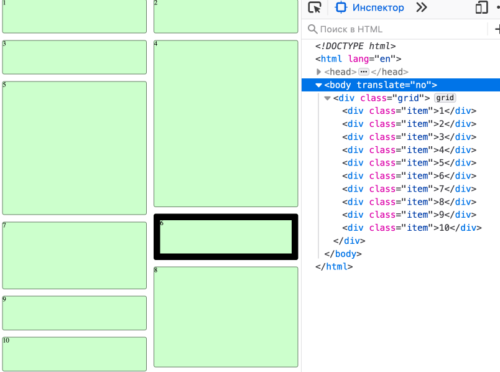

Не секрет, что в последние годы веб развивается крайне стремительно. Периодически выходят новые библиотеки, фреймворки и другие полезные для нас инструменты. Всё это безусловно помогает нам решать повседневные задачи. Но в погоне за популярными новинками мы совсем не обращаем внимание на истоки. Многие начинающие разработчики начинают знакомство с кодом именно с инструментов, а не с фундаментальных вещей. Обычно это связывают с тем, что сегодня подавляющее большинство вакансий для фронтенд-разработчиков напичканы «модными» и «хайповыми» словечками вроде «React», «Vue», «styled-components», и множеством других. Поэтому разработчикам важно изучать именно эти вещи, чтобы не остаться без работы. Но разве причина только в этом? Именно поэтому разработчикам не важны основы? Думаю, что только отчасти.
Недавно я послушал очередной
выпуск «Веб-стандартов» — одного из моих любимых русскоязычных подкастов. В данном контексте меня заинтересовал
раздел «Video как
picture», в котором обсуждалась новость о том, как компания
«Filament Group» (студия, которая занимается дизайном и фронтенд-разработкой)
предложила идею, чтобы элемент <source> со всеми его атрибутами
точно так же работал внутри элемента <video>, как он сейчас работают в элементе <picture>.
Напомню, что на данный момент такие атрибуты элемента <source>, как media,
srcset и sizes, поддерживаются в браузерах только для элемента
<source>, который находится в элементе <picture>. Послушайте эту часть
подкаста, чтобы лучше понимать, о чём речь.
Так вот, мнения ведущих разделились. Вадим посчитал, что крайне важно, чтобы эта идея была реализована, и что это будет очень здорово для разработчиков в целом. Другой же ведущий, Никита, тоже не был против внедрения этого предложения (да, повторюсь, что Никита не был против, если кто-то так подумал!), но при этом утверждал, что это фактически не отменит того, что разработчики скорее всего всё равно продолжат пользоваться уже готовыми решениями. Например, тот же YouTube предоставляет хороший и проверенный инструмент для этого дела.
Честно сказать, я разделяю мнение Никиты, хотя всеми руками и ногами всегда выступаю за внедрение новых нативных возможностей в браузерах. Дело в том, что, на мой взгляд, проблема всё же есть, и она заключается в том, что новые спецификации W3C и других подобных организаций появляются намного реже, чем новые инструменты для разработчиков. И разница в скорости просто колоссальная — примерно, как между человеком и гепардом. Веб-стандарты просто чисто физически не могут поспевать за всеми новинками. Ведь чтобы внедрить даже хотя бы какую-то мелочь, спецификациям нужно пройти очень долгий и муторный путь — от первого публичного черновика до рекомендации, и в целом, внедрения во все браузеры. Понятно, что последнее время ситуация улучшилась и нативные вещи выходят чаще, чем, скажем, десять лет назад. Но тем не менее, угнаться за «новизной» им крайне сложно.
Поэтому, поскольку инструменты уходят вперёд с большим отрывом, то компании, а следовательно и их сотрудники
выбирают именно их. А когда подтягиваются веб-стандарты, то они уже попросту никому не нужны, потому что
инструменты уже хорошо работают и приносят прибыль. Да и сами инструменты, к тому же, тоже развиваются и
становятся всё более удобными и практичными. Взять тот же пример выше с предложением по элементу
<source> и решением от YouTube: последнее уже внедрено в тысячи сайтов и какие бы
спецификации не выходили, мало кто будет выпиливать уже рабочее и удобное решение по понятным причинам бизнеса.
Это сегодняшние реалии и их приходится принимать.
К примеру, многие полагают, что всеми любимая библиотека jQuery ушла на покой, потому что вышел «Стандарт ES-2015», но это не совсем так. Потому что, на самом деле, появились всякие React, Vue, Angular, и т.д. Мы шагнули в эпоху веб-компонентов. Изменились мышление и подход, в которые jQuery со своей философией уже не вписывалась. То есть по факту произошла просто смена одного инструмента на другой, а не смена одного инструмента на нативный. Поэтому, далеко не факт, что, если бы не появились все эти новые библиотеки и фреймворки, то мы бы все ринулись писать на ванильном JavaScript, отказавшись от такой мощной и удобной библиотеки jQuery, которая имеет богатейший функционал, удобный API, абсолютную кроссбраузерность, поддержку Internet Explorer и кучу других плюшек. Мне даже почему-то кажется, что jQuery ещё могла бы задать жару, выпустив следующие версии библиотеки. Но судьба сложилась иначе ;)
Так что, пока в мире ворчит один Вадим Виллабаджо моют посуду, в Вилларибо уже давно пилят фичи и тратят монетки :)
Мне становится больно, когда на вопрос «Будете ли вы использовать новую стандартизированную вещь?» я слышу фразу, которая произносится с натяжкой, нехотя и немного пренебрежительно, мол «Нуу даа, возмооожно попробую применить её где-нибудь в своих пет-проектах, посмоотриим» (попытался передать интонацию). Вся печаль здесь в том, что разработчики даже не рассматривают применение новых стандартов в проектах своих компаний или других больших проектах. Речь идёт только о чём-то не очень важном и безопасном в плане конечного использования. А ведь веб-стандарты дают кучу преимуществ, на которые разработчики совсем не обращают внимание.
К примеру, поскольку веб-стандарты следуют единой спецификации, то они гарантируют, что ваш код будет работать одинаково на разных платформах, браузерах, устройствах (тех же телевизорах), где эти веб-стандарты поддерживаются. И всё это будет стандартизировано и в одном месте. Спецификации не отойдут назад, их никто не забросит в отличие от тех же библиотек, которые имеют свой «срок годности». Благодаря веб-стандартам мы можем писать эффективный и простой код, который легко поддерживать и расширять. И подумайте о размерах файлов, которые сокращаются в разы за счёт отсутствия лишних плагинов и прочих внешних зависимостей.
А поисковики? Не стоит забывать, что код, который следует веб-стандартам, намного лучше индексируется поисковиками благодаря своей чистоте и прямому назначению. Во многих библиотеках, к сожалению, очень много лишнего, поскольку акцент в них делается на результат, а не на качество кода. Чем меньше кода и зависимостей, тем быстрее грузится ваш сайт, а значит поисковые роботы будут к вам более дружелюбными. Хорошая индексация в поисковых системах позволит клиентам вашей компании быстрее о вас узнать, а следовательно воспользоваться вашими услугами. А это по идее важно, так ведь?
И не забывайте про веб-доступность! Многие не придают ей значения, что очень зря, поскольку это ограничивает доступ к сайту потенциальным пользователям — людям с ограниченными возможностями, которые также могут стать вашими клиентами. Дело в том, что большинство инструментов пренебрегают доступностью, считая её лишней тратой времени и сил (что, кстати, тоже отрицательно влияет на поисковую выдачу). Особенно такое грустно видеть в каких-нибудь ui-kit-ах или больших библиотеках ui-компонентов. Да, и в конце концов, подумайте о людях, которые не получают доступ к нужной им информации!
И это только часть полезных вещей, которые приносят с собой веб-стандарты!
Приведу несколько примеров, которые наглядно демонстрируют всю красоту и пользу веб-стандартов.
Пару лет назад я делал один учебный проект на React.js, где задействовал очень классную библиотеку для создания «Masonry-раскладки» (она же «плиточная верстка», «раскладка кирпичиками», и т.д). Чтобы она заработала в React.js, я воспользовался специальным компонентом «react-masonry-component», который как раз и использует эту библиотеку «под капотом». До недавнего времени задачу «Masonry-раскладки» нельзя было решить нативными средствами (хотя идеи по реализации поступали). В 2020 году появилось предложение добавить возможности Masonry в грид-раскладку, которое затем вошло в черновик CSS-гридов 3 уровня, а его экспериментальную реализацию уже можно пощупать в Firefox за флагом.
Давайте сравним две реализации (нативную и библиотечную). Я покажу два скриншота из девтулзов, которые наглядно покажут разницу.
Вот пример кода Masonry-раскладки, которую создана библиотекой:
В коде видно несколько плохих вещей, которые сходу бросаются в глаза:
position: absolute, что «вырывает» их из потокаleft и right
А вот скриншот той же Masonry-раскладки, но которая реализована уже нативным способом:
И вот разница:
grid:
masonry
По-моему, разница вполне ощутима, не так ли?
Те, кто занимается веб-разработкой уже долгие годы, прекрасно помнят всё это множество обалденных jQuery-плагинов, которые помогали нам делать крутые анимационные сайты со скроллингом с поддержкой навигации по элементам. Все эти незабываемые карусели, слайдеры, адаптивные галереи… ох, нам есть что вспомнить :)
И вот, благодаря CSS-спецификации CSS Scroll Snap Module Level 1 и её отличной поддержке в браузерах мы можем забыть о всех этих библиотеках, поскольку теперь это работает в браузере стандартно.
Я не буду демонстрировать разницу в коде между браузерной и библиотечной реализацией, она примерно такая же, как и в случае с Masonry-раскладкой. Те же плюсы/минусы.
А Colorpicker-ы? Помните, сколько раз мы подключали всякие jQuery-скрипты и -плагины (и делаем это до сих пор!),
чтобы получить возможность выбирать цвет с помощью визуального интерфейса. А сколько дополнительного
JavaScript-кода мы писали, чтобы всё это правильно преобразовывалось и подставлялось, куда и как нам нужно? Не
хочу никого расстраивать, но открою секрет, что того же самого можно достичь с помощью
элемента input с типом color. И это всё, что требуется! То есть,
оно просто работает без всяких лишних инструментов и кода, представляете?
О чём это говорит? О том, что мы совсем не смотрим по сторонам и готовы жертвовать красотой, простотой и гибкостью кода ради привычных и популярных вещей.
Можно привести ещё множество наглядных примеров, но суть от этого не поменяется. Вряд ли это повлияют на ситуацию. Но я был бы безумно рад, если бы мы хотя бы задумались обо всём этом. Ведь тогда это будет, хоть и маленькая, но всё же победа!
А дальше либо всё так же ничего, либо светлое, как чистый код, будущее. Выбор за каждым из нас. Со своей же стороны могу предположить, что, чтобы дело сдвинулось с мёртвой точки, нужна здравая пропаганда. В первую очередь, люди должны осознавать всю пользу и ценность веб-стандартов, заявлять и говорить о них. Можно рассказывать о них в своих компаниях, статьях, докладах и встречах. Объяснять выгоду, которую они могут принести бизнесу.
В том же подкасте «Веб-стандарты» ведущий Вадим Макеев часто рассказывает о преимуществах веб-стандартов, приводит отличные примеры из жизни и обоснованно ворчит на тех, кто не следует этим вещам. А также Вадим делает крайне познавательные доклады и в своё время даже организовывал целые конференции на эту тему. За что надо отдать должное этому человеку!
Или, к примеру, взять моего горячо любимого друга и соавтора css-live.ru Илью Стрельцына. Этот парень постоянно следит за гитхабом Рабочей группы по CSS и время от времени активно участвует в обсуждении новинок, предлагает свои идеи, помогает исправлять ошибки в спецификациях. Часто вместе с Софией Валитовой они копаются в дебрях спецификаций, чтобы потом вычленить оттуда самые важные вещи и поделиться ими с нами. Кстати, у Софии даже есть свой блог на чистом HTML!
Все они обычные ребята, как и мы с вами. И они не одни, есть ещё много людей с горящими глазами, которые прекрасно понимают, какую важную роль в нашей жизни играют веб-стандарты! Ведь, чтобы быть впереди веба, веб-стандартам нужно бежать в два раза быстрее. Но только мы можем присоединиться к ним и помочь ускорить этот процесс!